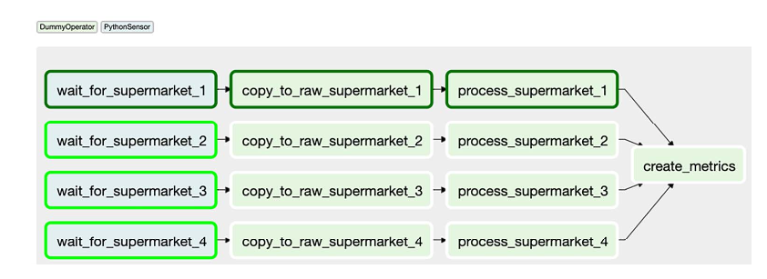

Note
Other than my experience and the documentation, the main resource behind this post and figures is the fantastic book: Data Pipelines with Apache. Airflow.
- Workflows are most commonly triggered based on schedule intervals provided using
start_date,end_date,schedule_interval. Airflow would calculate when the next schedule would be and start the first task(s) to run at the next data/time. - However, sometimes we want the workflow to run based on the occurance of external events such as a file is available in specific location OR code is changed on git repo etc.
- One way to execute workflows based on the occurance of external exents is using Airflow’s sensors. Sensor is a subclass of operators that checks if certain condition is true. If true, execute the step (workflow). If false, wait for a given period (default 60 seconds) and tries again. It keeps doing so for timeout period. This is a form of Poking, which is checking for the existence of file in the case of FileSensor.
from airflow.sensors.filesystem import FileSensor
wait_for_file_1 = FileSensor(
task_id="wait_for_file_1", filepath="/data/file_1.csv"
)- We can also use globbing with FileSensors by using wildcards to check for the existence of file(s)
- We can also use PythonSensor which checks for certain condition and must return a Boolean. It is more flexible and easier to read than using globbing within FileSensor. It is the same as PythonOperator in terms of taking a Python callable
from pathlib import Path
from airflow.sensors.python import PythonSensor
# Check whether there is any data for a given supermarker
# and there is _SUCCESS path which indicates whether the
# data for the given supermarket is all uploaded
def _wait_for_supermarket(supermarket):
supermarket_path = Path("/data") / supermarket
success_path = Path("/data") / "_SUCCESS"
data_files = supermarketpath.glob("*.csv")
return data_files and success_path.exists()
wait_for_supermarket_1 = PythonSensor(
task_id="wait_for_supermarket_1",
python_callable=_wait_for_supermarket,
op_kwargs={"supermarket": "supermarket_1"},
dag=dag
)
- All sensors take a
timeoutarguments, which has default value of 7 days - There is also a limit on the number of tasks Airflow can run concurrently per DAG (default is 16). DAG takes
concurrencyargument that can change this number. There is also a limit on the number of tasks per global Airflow and the number DAG runs per DAG
wait_for_supermarket_1 = PythonSensor(
task_id="wait_for_supermarket_1",
python_callable=_wait_for_supermarket,
op_kwargs={"supermarket": "supermarket_1"},
concurreny=20, # Default is 16
dag=dag
)- There is snowball effect when sensors don’t succeed. The occupy slots that DAG has (which is determined by the concurrency argument. From the above figure, if only task 1 succeeds and the rest keeps polling and the DAG is scheduled daily with default concurrency of 16 slots and default timeout of 7 days, this is what will happen (sensor deadlock):
- Day 1: Supermarket 1 succeeded; supermarkets 2, 3, and 4 are polling, occupying 3 tasks.
- Day 2: Supermarket 1 succeeded; supermarkets 2, 3, and 4 are polling, occupying 6 tasks.
- Day 3: Supermarket 1 succeeded; supermarkets 2, 3, and 4 are polling, occupying 9 tasks.
- Day 4: Supermarket 1 succeeded; supermarkets 2, 3, and 4 are polling, occupying 12 tasks.
- Day 5: Supermarket 1 succeeded; supermarkets 2, 3, and 4 are polling, occupying 15 tasks.
- Day 6: Supermarket 1 succeeded; supermarkets 2, 3, and 4 are polling, occupying 16 tasks; two new tasks cannot run, and any other task trying to run is blocked.
- This also affect the global Airflow limit of maximum number of tasks that can run concurrently, which may lead to whole system get stalled.
- For sensor task, it pokes to check the condition and block if it is false. So it would run for a little bit and wait for the most part. It keeps poking untel the timeout period is completed, which means it keeps occupying the slot until the condition becomes true or timeout is reached
modeargument which has two values: {poking,reschedule}. The default is poking. Reschedule can solve the sensor deadlock and snowball effect because it releases the slot the sensor task is occupying after the slot has finished poking. In other words, sensor task would poke, if condition if false, the system will reschedule it and take its slot and make it available to other tasks. It is the same concept as process scheduling that the OS does when a process does a blocking system call.
wait_for_supermarket_1 = PythonSensor(
task_id="wait_for_supermarket_1",
python_callable=_wait_for_supermarket,
op_kwargs={"supermarket": "supermarket_1"},
mode="reschedule",
dag=dag
)- We can trigger another DAG to run from inside another DAG using
TriggerDagRunOperator. This will cause another DAG to run once the trigger_operator runs which is useful if we want to split DAGs and make some DAGs available to other DAGs instead of repearing functionality. See below for both approaches:
from pathlib import Path
import airflow.utils.dates
from airflow import DAG
from airflow.operators.dummy import DummyOperator
from airflow.operators.trigger_dagrun import TriggerDagRunOperator
from airflow.sensors.python import PythonSensor
dag1 = DAG(
dag_id="ingest_supermarket_data",
start_date=airflow.utils.dates.days_ago(3),
schedule_interval="0 16 * * *",
)
dag2 = DAG(
dag_id="create_metrics",
start_date=airflow.utils.dates.days_ago(3),
schedule_interval=None, # Since it will be triggered
)
def _wait_for_supermarket(supermarket_id_):
supermarket_path = Path("/data/" + supermarket_id_)
data_files = supermarket_path.glob("data-*.csv")
success_file = supermarket_path / "_SUCCESS"
return data_files and success_file.exists()
for supermarket_id in range(1, 5):
wait = PythonSensor(
task_id=f"wait_for_supermarket_{supermarket_id}",
python_callable=_wait_for_supermarket,
op_kwargs={"supermarket_id_": f"supermarket{supermarket_id}"},
dag=dag1,
)
copy = DummyOperator(task_id=f"copy_to_raw_supermarket_{supermarket_id}", dag=dag1)
process = DummyOperator(task_id=f"process_supermarket_{supermarket_id}", dag=dag1)
trigger_create_metrics_dag = TriggerDagRunOperator(
task_id=f"trigger_create_metrics_dag_supermarket_{supermarket_id}",
trigger_dag_id="create_metrics", # Has to be the same dag_id as dag2
dag=dag1,
)
wait >> copy >> process >> trigger_create_metrics_dag
compute_differences = DummyOperator(task_id="compute_differences", dag=dag2)
update_dashboard = DummyOperator(task_id="update_dashboard", dag=dag2)
notify_new_data = DummyOperator(task_id="notify_new_data", dag=dag2)
compute_differences >> update_dashboard- Each DAG run has a run_id that starts with one of the following:
scheduled__to indicate the DAG run started because of its schedulebackfill__to indicate the DAG run started by a backfill jobmanual__to indicate the DAG run started by a manual action (e.g., pressing the Trigger Dag button, or triggered by a TriggerDagRunOperator)
- From the UI, scheduled DAGs have their task instance in black border while Triggered DAGs don’t
- Clearing a task in a DAG will clear the task and all its downstream tasks and trigger a run (backfill)
- It only clears tasks within the same DAG, NOT downstream tasks in another DAG of TriggerDagRunOperator
- If the triggered DAG has dependency on multiple triggering DAGs to be completed before it can run, then we can use
ExternalTaskSensorthat checks whether the task has been completed successfully (sensor poking the state of tasks in another DAGs). EachExternalTaskSensorchecks for only 1 task by querying the metastore database- By default, it uses the same execution_date as itself
- If the task runs on different schedule, we then need to provide timedelta object to
execution_deltaargument to get what would be the execution_date of the task it tries to sense
import datetime
import airflow.utils.dates
from airflow import DAG
from airflow.operators.dummy import DummyOperator
from airflow.sensors.external_task import ExternalTaskSensor
dag1 = DAG(
dag_id="ingest_supermarket_data",
start_date=airflow.utils.dates.days_ago(3),
schedule_interval="0 16 * * *",
)
dag2 = DAG(
dag_id="create_metrics",
start_date=airflow.utils.dates.days_ago(3),
schedule_interval="0 18 * * *",
)
DummyOperator(task_id="copy_to_raw", dag=dag1) >> DummyOperator(
task_id="process_supermarket", dag=dag1
)
wait = ExternalTaskSensor(
task_id="wait_for_process_supermarket",
external_dag_id="figure_6_20_dag_1",
external_task_id="process_supermarket",
# positive # will be subtracted from the execution_date of task sensor
# to get the execution_date of the task it is trying to sense
execution_delta=datetime.timedelta(hours=6),
dag=dag2,
)
report = DummyOperator(task_id="report", dag=dag2)
wait >> report- We can also trigger DAGs from CLI which will have execution_date of the current data and time
airflow dags trigger dag1- With configuration; which will be available in the context of each task using context[“dag_run”].conf:
airflow dags trigger -c '{"supermarket_id": 1}' dag1airflow dags trigger --conf '{"supermarket_id": 1}' dag1